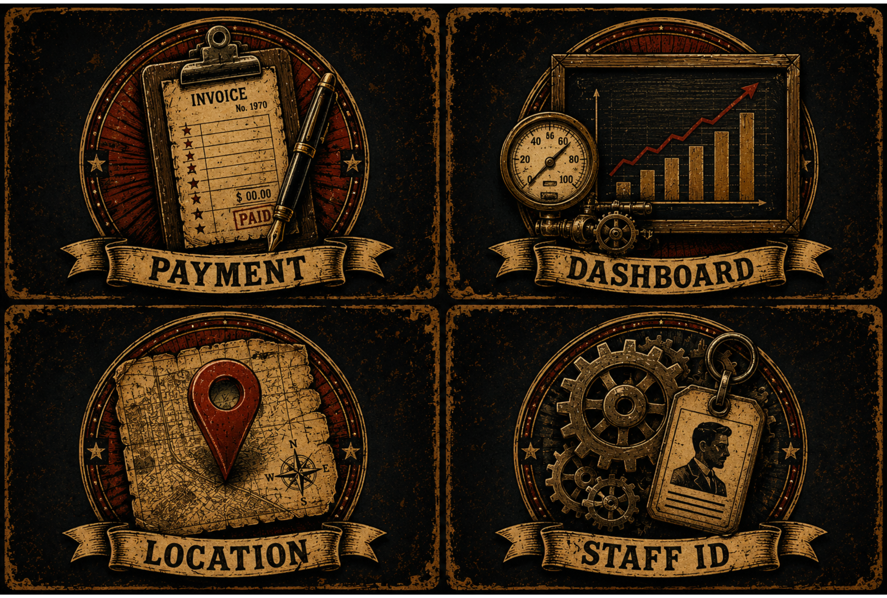

วิชาโครงงานด้านเทคโนโลยีสารสนเทศ 1 (IT01) • IT NPRU
การนำเสนอโครงงาน: ระบบบริหารรายได้และค่าคอมมิชชันช่างตัดผมผ่านไลน์
LINE-Based Barbershop Income and Commission Management System

🔍 ภาพที่ 1.1 แนวคิดการแก้ไขปัญหา (Fishbone Diagram) ที่มา: นายสราวุฒิ อุยยาหาญ (2570)
วิเคราะห์สาเหตุ 6 ด้าน & แนวทางบูรณาการ
- คน & กระบวนการ: แก้ปัญหาจดมือ/คิดคอมมิชชันผิด ด้วยระบบบันทึกอัตโนมัติและคำนวณส่วนแบ่งตามอัตราคงที่
- เครื่องมือ & การบริหาร: แก้ปัญหาใช้กระดาษ/ไร้ใบเสร็จ ด้วยเว็บแอป LINE LIFF และการออกใบเสร็จ e-Receipt อัตโนมัติ
- การชำระเงิน & ตรวจสลิป: แก้ปัญหาสลิปปลอม/สลิปซ้ำ ด้วย Slip2Go API ตรวจ QR และยอดเงินจริงใน 2-3 วินาที
- ข้อมูล & รายงานสรุป: แก้ปัญหาข้อมูลกระจัดกระจาย ด้วย Cloud MySQL และแดชบอร์ด Google Looker Studio สด

🔍 ภาพที่ 3.1 ผังการทำงานภาพรวมของระบบ (System Architecture)
5 เสาหลักเทคโนโลยีของระบบ
- Client Interface: LINE Official Account และ LINE LIFF SDK (HTML5, Tailwind CSS, JS) เข้าถึงสะดวกไม่ต้องลงแอป
- Core Orchestrator: n8n Workflow Automation รันแบบ Self-Hosted บน Railway รับส่ง Webhook และตรรกะระบบ
- Slip Verification: Slip2Go API ตรวจสอบ QR Code ธนาคาร ยอดเงิน บัญชีผู้รับ และป้องกันสลิปซ้ำ
- Database Layer: Cloud MySQL บน Railway เก็บข้อมูลช่าง บริการ ธุรกรรม และการจ่ายเงิน
- Analytics Layer: Data Studio (Google Looker Studio) สร้างแดชบอร์ดสรุปยอดขายสด

🔍 ภาพที่ 3.1 ผังแสดงภาพรวมกระบวนการทำงานของระบบ (System Flowchart)
4 ขั้นตอนการทำงานหลักของระบบ
- 1. รับชำระเงิน (Customer Step): ลูกค้าเปิด LINE LIFF เลือกช่าง/บริการ และเลือกชำระเงินสดหรือโอนเงินผ่าน QR Code
- 2. ประมวลผลและตรวจสลิป (Engine Step): n8n รับ Webhook ➡️ ส่งรูปสลิปให้ Slip2Go API ตรวจสอบความถูกต้องและสลิปซ้ำ
- 3. คำนวณเงินและแจ้งเตือน (Record Step): คำนวณส่วนแบ่งค่าคอมมิชชัน บันทึกลง MySQL ยิง e-Receipt ให้ลูกค้า และแจ้งเตือนช่างทันที
- 4. ตัดรอบเคลียร์เงิน (Settlement Step): เจ้าของร้านสรุปยอดค้างจ่ายช่างผ่านหลังบ้าน แนบสลิป และอัปเดตสถานะเป็น Settled

🔍 ภาพที่ 3.6 ผังงานการตรวจสอบสลิปโอนเงิน (Slip Verification Logic)
ตรรกะการตรวจสอบ 4 ขั้นตอน (Slip2Go)
- ขั้นที่ 1 สแกน QR Payload: Slip2Go API อ่านข้อมูล QR Code บนสลิปและดึงเลขอ้างอิงธุรกรรมธนาคาร (trans_ref)
- ขั้นที่ 2 ตรวจสอบสลิปซ้ำ: ตรวจสอบเลขอ้างอิงในตาราง transactions ของ MySQL หากพบว่าเคยใช้แล้วจะปฏิเสธทันที
- ขั้นที่ 3 ตรวจสอบบัญชีผู้รับ: ตรวจสอบชื่อบัญชีผู้รับเงินว่าตรงกับ 'นายสราวุฒิ อุยยาหาญ' หรือไม่
- ขั้นที่ 4 ตรวจสอบยอดเงิน: ตรวจสอบยอดเงินโอนจริงว่าเท่ากับหรือมากกว่าราคาค่าบริการที่เลือกหรือไม่
- ผลลัพธ์: หากผ่านครบทุกเงื่อนไข ให้ออกบิลและยิง Flex e-Receipt สีเขียวทันที / หากไม่ผ่าน จะแจ้งเตือนข้อผิดพลาด

🔍 ภาพที่ 3.3 Sequence Diagram การตรวจสอบสลิปและชำระเงิน
กระบวนการรับส่งข้อมูลแบบเรียลไทม์
- 1. Form Submission: ลูกค้ากดยืนยันชำระเงินผ่านหน้า LINE LIFF พร้อมแนบ Base64 Image
- 2. Webhook Ingestion: n8n รับ Webhook ภายในเสี้ยววินาที และยิงคำขอไปยัง Slip2Go API
- 3. Bank Verification: Slip2Go ส่งผลการตรวจสถานะสลิป เลข Ref และยอดเงินจริงกลับมายัง n8n
- 4. Database Insertion: n8n คำนวณส่วนแบ่งช่าง (Barber Earn) และบันทึกลงตาราง transactions
- 5. Dual Notifications: n8n สั่ง LINE API ส่ง e-Receipt ให้ลูกค้า และส่ง Push Alert ยอดเงินเข้า LINE ช่างทันที

🔍 ภาพที่ 3.4 Sequence Diagram การตัดรอบเคลียร์เงินช่าง (Settlement)
ความโปร่งใสในกระบวนการเคลียร์เงิน
- 1. ตรวจสอบยอดค้างจ่าย: แอดมินเปิดระบบหลังบ้านดูยอดเงินสะสมที่ยังไม่ได้เคลียร์ (Pending) ของช่างแต่ละคน
- 2. โอนเงินและแนบสลิป: เจ้าของร้านโอนเงินเข้าบัญชีช่าง พร้อมแนบภาพสลิปหลักฐานการโอนลงในระบบ
- 3. บันทึกประวัติ Payout: ระบบสร้างบันทึกในตาราง payouts และปรับสถานะบิลที่เกี่ยวข้องเป็น 'Settled'
- 4. แจ้งเตือนสลิปเข้าช่าง: ระบบยิง LINE Push Notification ส่งภาพสลิปและรายละเอียดยอดเงินให้ช่างตัดผมทราบทันที

1. เมนูลัด 6 ช่องบน LINE OA

2. หน้าฟอร์มชำระเงิน LIFF
จุดเด่นของ LINE LIFF Form
- Zero Installation: ลูกค้าไม่ต้องดาวน์โหลดแอปใหม่ ทำรายการผ่านห้องแชท LINE ที่คุ้นเคย
- เลือกช่างและบริการง่าย: มีรูปภาพทรงผม ราคา และระยะเวลาบริการแสดงชัดเจน
- 2 ช่องทางชำระเงิน: รองรับทั้งเงินสดหน้าร้าน (Cash) และการสแกนโอนเงินผ่าน QR Code
- QR Code พร้อมเพย์ร้าน: แสดงภาพ QR Code และเลขบัญชีให้ลูกค้าแตะคัดลอกหรือแคปภาพไปสแกนได้สะดวก

1. สลิปโอนเงินจริงที่นำมาทดสอบ

2. ใบเสร็จ Flex Message สีเขียว
ความแม่นยำและความปลอดภัย
- ประมวลผลรวดเร็ว: ตรวจสอบสลิปผ่าน Open Banking API สำเร็จภายในเวลาเฉลี่ย 2-3 วินาที
- ป้องกันสลิปซ้ำ 100%: เมื่อสลิปผ่านการอนุมัติแล้ว เลข Ref จะถูกจำไว้ในระบบ ไม่สามารถนำมาใช้ซ้ำได้อีก
- e-Receipt เป็นหลักฐาน: ส่งใบเสร็จ Flex Message สรุปเลขบิล ชื่อช่าง บริการ ยอดเงิน และเวลาโอนเข้า LINE ลูกค้าทันที
- ตรวจจับยอดไม่ตรง: หากยอดเงินในสลิปไม่ตรงกับราคา ระบบจะแจ้งเตือนปฏิเสธทันที

1. ตารางจัดการช่างและ % คอมมิชชัน

2. ตารางสรุปยอดค้างเคลียร์เงินช่าง
การบริหารจัดการร้านอย่างเป็นระบบ
- Full CRUD Operations: เพิ่ม ลบ แก้ไข ข้อมูลช่าง กำหนดสัดส่วนค่าคอมมิชชัน และปรับราคาบริการได้ตลอดเวลา
- ผูก LINE UID ช่าง: เชื่อมต่อบัญชีช่างกับ LINE UID เพื่อให้ระบบแจ้งเตือนไปยังช่างได้ถูกต้องตรงคน
- โมดูลตัดรอบเคลียร์เงิน (Settlement): รวมยอดเงินที่ร้านต้องจ่ายช่างแต่ละคนตามรอบเวลา (วัน/สัปดาห์/เดือน)
- แนบหลักฐานสลิป: แอดมินแนบภาพสลิปโอนเงินจ่ายช่างเข้าระบบ และส่งสลิปเข้า LINE ช่างทันทีเป็นหลักฐาน